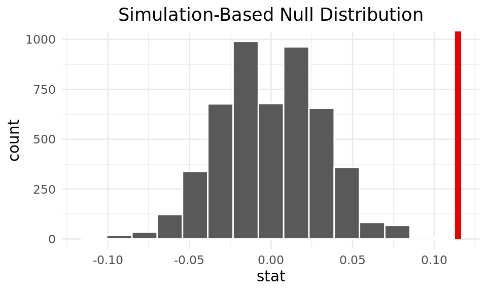
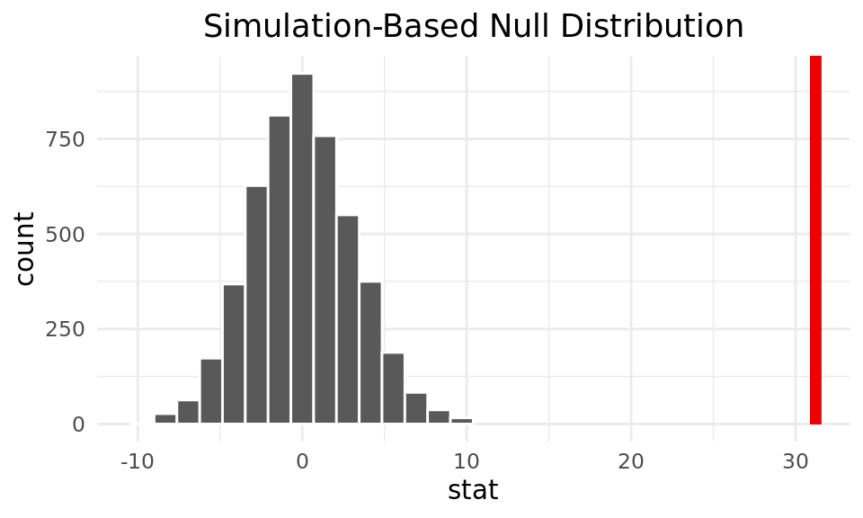

#|: loading-packages
library(tidyverse)
library(tidymodels)
library(scales)
library(ggplot2)
library(lubridate)
library(dplyr)The Impacts of Inflation and Interest Rates on the Stock Market
Report
Introduction
We want to explore the relationship between interest and inflation rates and the performance of the stock market. In doing so, we hope to determine economic characteristics in which it’s beneficial to invest in the stock market, as well as if/when certain companies or sectors perform better in different economic climates. Therefore, we are interested in answering the following questions:
How have these rates (inflation and interest) historically impacted the returns of the stock market?
How closely has the current performance of the market (the past two years) followed these historical trends?
And finally, does the current high-rate economic climate disproportionately affect some companies/sectors more than others? If so, why?
We believe the overall stock market would be hurt by high inflation and corresponding high interest rates, both because consumers’ discretionary incomes drop and because companies are disincentivized from borrowing, due to the higher costs associated with taking out a loan. We expect to see this relationship in both our historical analysis and our current-day analysis. Conversely, in times of lower rates, we expect market returns to be higher, on average. Though we expect the stock market as a whole to suffer from high rates, we believe certain sectors of the economy could serve as silver linings for investors’ pockets; these industries include: financials, health care, utilities, and consumer staples. We believe these sectors could perform better than the aggregate market because they sell essential goods that consumers must purchase no matter the state of the economy (health care, utilities, and consumer staples). Also, we believe the financials sector will do well because banks are able to charge higher interest rates on their loans (and thus earn greater profits) when interest rates are high.
Note: We are using the S&P 500 as a model of the performance of the entire market, and we are using the federal-funds rate, the interest rate at which banks loan to other banks, to model the general trend of all interest rates. We believed these are logical assumptions, as the S&P 500 includes the 500 largest US-based companies (and thus covers a large portion of the total market) and the federal-funds rate generally serves as a benchmark for all other interest rates (because it is indirectly influenced by the Federal Reserve’s policies). Also, all of our observations feature the performance of the market (S&P 500) or an individual company in the S&P 500 on a specific day/month/year.
Part 1: Historical Analysis
Sources:
Federal Funds Rate and Inflation Rate: Macrotrends (https://www.macrotrends.net/2015/fed-funds-rate-historical-chart)
S&P 500 Annual Returns: Slickcharts (https://www.slickcharts.com/sp500/returns)
Monthly Statistics (scraped): Official Data (https://www.officialdata.org/us/stocks/s-p-500/1900).
All of these sites collected these data by retrieving the data published publicly on stock exchanges, except for the federal-funds rate–this data was collected from the World Bank. In addition, each of these sites updates their data monthly/yearly (although they could update it daily, as they are collecting live data). Each observation represents a month in a year (between 1961 and 2020) and includes the following variables:
| Variable | Definition |
|---|---|
| year | year in which observation was recorded |
| month | month in which observation was recorded |
| monthly_return | total stock market’s monthly return |
| year_to_date_return | S&P 500’s yearly return |
| mean_fed_funds_rate | mean annual interest rate set by the Federal Reserve |
| inflation rate | mean annual inflation rate |
| decade | represents decade in which observation was made |
#|: loading-historical-data
historical_data <- read_csv("data/historical_data.csv")
glimpse(historical_data)Rows: 720
Columns: 10
$ year <dbl> 1961, 1961, 1961, 1961, 1961, 1961, 1961, 1961…
$ month <dbl> 1, 2, 3, 4, 5, 6, 7, 8, 9, 10, 11, 12, 1, 2, 3…
$ monthly_return <chr> "4.37%", "3.40%", "2.92%", "1.26%", "-1.08%", …
$ monthly_avg_price <dbl> 25134.18, 25988.00, 26746.59, 27084.50, 26791.…
$ inflation_rate <dbl> 1.0707, 1.0707, 1.0707, 1.0707, 1.0707, 1.0707…
$ inflation_annual_change <dbl> -0.39, -0.39, -0.39, -0.39, -0.39, -0.39, -0.3…
$ mean_fed_funds_rate <dbl> 1.95, 1.95, 1.95, 1.95, 1.95, 1.95, 1.95, 1.95…
$ year_to_date_return <dbl> 26.89, 26.89, 26.89, 26.89, 26.89, 26.89, 26.8…
$ time_period <chr> "not so recent", "not so recent", "not so rece…
$ decade <chr> "'60s", "'60s", "'60s", "'60s", "'60s", "'60s"…#|: inflation-vs-interest-plot
# Completed with assistance from: https://community.rstudio.com/t/adding-manual-legend-to-ggplot2/41651/5
colors <- c("Inflation" = "blue", "Interest" = "red")
ggplot(historical_data) +
geom_line(aes(x = year, y = mean_fed_funds_rate, color = "Interest")) +
geom_line(aes(x = year, y = inflation_rate, color = "Inflation")) +
theme_minimal() +
labs(
title = "Interest Rates vs. Inflation Rates",
subtitle = "1961 - 2020",
x = "Year",
y = "Average Annual Rate (%)",
color = "Type"
) +
theme(
plot.title = element_text(hjust = 0.5),
plot.subtitle = element_text(hjust = 0.5),
legend.title = element_text(hjust = 0.5)
) +
scale_color_manual(values = colors)
We first isolated interest and inflation rates to determine the relationship between them. To do so, we utilized a line graph to see their trends across time–more specifically, from 1961 to 2020. As you can see in the graph above, these rates are very closely related (especially prior to 2000), with interest and inflation peaking and dipping at similar times. This trend makes sense, as the Federal Reserve tends to raise the federal-funds (interest) rate when inflation rises, in an attempt to slow the economy down. (This is why the Federal Reserve is raising interest rates now–more on that later.)
#|: interest-inflation-and-market-returns-graph
colors_redux <- c("Inflation" = "blue", "Interest" = "red", "Market Returns" = "darkgreen")
historical_data |>
ggplot() +
geom_line(aes(x = year, y = mean_fed_funds_rate, color = "Interest")) +
geom_line(aes(x = year, y = inflation_rate, color = "Inflation")) +
geom_line(aes(x = year, y = year_to_date_return, color = "Market Returns")) +
theme_minimal() +
labs(
title = "Impacts of Interest Rates and Inflation Rates on Market Returns",
subtitle = "1961 - 2020",
x = "Year",
y = "Average Annual Rate (%)",
color = "Type"
) +
theme(
plot.title = element_text(hjust = 0.5),
plot.subtitle = element_text(hjust = 0.5),
legend.title = element_text(hjust = 0.5)
) +
scale_color_manual(values = colors_redux)
Then, we analyzed the relationship between rates and average yearly returns of the stock market for the same period using another line graph. As depicted in the graph, market returns are extremely volatile and (at least according to this graph) doesn’t seem to depend on either interest or inflation, contrary to our hypothesis.
#|: best-ten-years-of-returns
historical_data_best <- historical_data |>
distinct(year, mean_fed_funds_rate, inflation_rate, year_to_date_return) |>
arrange(desc(year_to_date_return)) |>
slice_head(n = 10) |>
relocate(year, year_to_date_return)
historical_data_best# A tibble: 10 × 4
year year_to_date_return inflation_rate mean_fed_funds_rate
<dbl> <dbl> <dbl> <dbl>
1 1995 37.6 2.81 5.83
2 1975 37.2 9.14 5.82
3 1997 33.4 2.34 5.46
4 1980 32.4 13.5 13.4
5 2013 32.4 1.46 0.11
6 1985 31.7 3.55 8.1
7 1989 31.7 4.83 9.21
8 2019 31.5 1.81 2.16
9 1991 30.5 4.24 5.69
10 2003 28.7 2.27 1.13#|: worst-ten-years-of-returns
historical_data_worst <- historical_data |>
distinct(year, mean_fed_funds_rate, inflation_rate, year_to_date_return) |>
arrange(year_to_date_return) |>
slice_head(n = 10) |>
relocate(year, year_to_date_return)
historical_data_worst# A tibble: 10 × 4
year year_to_date_return inflation_rate mean_fed_funds_rate
<dbl> <dbl> <dbl> <dbl>
1 2008 -37 3.84 1.92
2 1974 -26.5 11.1 10.5
3 2002 -22.1 1.59 1.67
4 1973 -14.7 6.18 8.74
5 2001 -11.9 2.83 3.88
6 1966 -10.1 3.02 5.11
7 2000 -9.1 3.38 6.24
8 1962 -8.73 1.20 2.71
9 1969 -8.5 5.46 8.21
10 1977 -7.18 6.50 5.54Next, we determined the best and worst 10 years of performance for the stock market by sorting by year_to_date_return, in order to examine the years individually rather than as a trend across time. Many of the best years feature at least one relatively low rate (<5%), with many having both low interest and inflation rates. Noticeable outliers include 1980, whose rates were both over 13%, and 1975, whose interest rate was almost 6% and inflation 9%. This trend of high returns correlating with lower rates does support our hypothesis. On the other hand, we expected many of the worst years for market returns to have high rates; surprisingly, this was not the case for about half of the worst years. Though some years did support our hypothesis, including 1974, 1973, 1969, and 1977, the others featured surprisingly low rates. We suspect that these unanticipated poor performance of the stock market during times of low rates could possibly be explained by recessions occurring during these years; in recessionary gaps, inflation tends to be lower because the economy has slowed significantly, and interest rates tend to be low as well in an attempt to re-stimulate the economy by encouraging borrowing.
#|: creating-df-of-averages-of-returns-and-rates-by-decade
# excluded 2020 because it's not a whole decade
historical_data_decade <- historical_data |>
filter(decade != "2020") |>
group_by(decade) |>
summarize(
mean_return = mean(year_to_date_return),
mean_interest = mean(mean_fed_funds_rate),
mean_inflation = mean(inflation_rate)
) |>
arrange(desc(mean_return))#|: visualization-of-rates-by-decade
historical_data_decade |>
pivot_longer(
!decade,
names_to = "type",
values_to = "rate"
) |>
mutate(
type = as.factor(type),
type = fct_rev(type)
) |>
ggplot(aes(x = type, y = rate, fill = type)) +
geom_col() +
facet_wrap(~decade, ncol = 3) +
labs(
title = "Mean Returns and Rates by Decade",
subtitle = "1960s - 2010s",
y = "Mean Rate",
fill = "Type"
) +
scale_fill_viridis_d() +
theme_minimal() +
theme(
plot.title = element_text(hjust = 0.5),
plot.subtitle = element_text(hjust = 0.5),
legend.title = element_text(hjust = 0.5),
axis.title.x = element_blank(),
axis.text.x = element_blank()
)
For the last part of our historical analysis, we wanted to examine the averages of returns, interest, and inflation by decade. To do so, we created a bar chart for each decade (using geom_col() and facet_wrap()). This graph supports what we concluded after examining the best and worst 10 years of returns: higher returns seem to be common in times of low rates, but it’s difficult to determine a relationship between returns and rates when returns are lower. For example, the ’60s, ’90s, and 2010s all featured high returns (~10+%) and rates at or below 5%; an outlier decade is the 2000s, whose average return was an abysmal ~1% despite low rates. On the other hand, in decades when rates were high (the ’70s and ’80s), returns were much more volatile–about average in the ’70s (7.5%) yet outstanding in the ’80s (15+%).
Conclusion: Our initial hypothesis was partially correct. It seems that higher returns in the stock market generally correlate with lower interest and inflation rates, but years with lower returns can’t be explained as neatly, at least with the data we’re using. A potential confounding variable could be whether our economy was experiencing a recession during that year, as recessions sometimes create environments where returns in the stock market are poor even in times of low rates.
Part 2: Current-day Analysis
Source:
- Investing.com (https://www.investing.com/indices/us-spx-500-historical-data)
Investing.com gets their data from financial-data providers, including stock exchanges and/or directly from market makers (who set stock prices to match supply and demand). The data is collected in real time by monitoring transactions (selling, buying, etc.) executed in the stock market, which correspond to increases/decreases in prices. Each observation represents a different day (between 1 October 2020 and 28 October 2022) and includes the following variables:
| Variable | Definition |
|---|---|
| date | day on which observation was recorded |
| price | closing daily price for the S&P 500 |
| open | opening daily price for the S&P 500 |
| daily_percentage_change | daily percentage difference between opening and closing prices |
| daily_diff | daily numerical difference between opening and closing prices |
| gain | TRUE if daily_diff > 0 (positive return for the day), else FALSE |
Contextualization: This year, inflation has risen to ~8%, up from <2% in 2020 and <5% in 2020. Interest rates have steadily risen in tandem with this increase in inflation. In an attempt to slow down inflation, Federal Reserve has increased the discount rate (the rate at which banks are charged to borrow from the Federal Reserve) from 0.5% in March 2022 to a current rate of 4%, which is the highest it’s been since the 2008 recession.
#|: loading-current-day-sp500-data
sp500_curr <- read_csv("data/sp500_curr_updated.csv")
glimpse(sp500_curr)Rows: 524
Columns: 9
$ Date <chr> "10/28/2022", "10/27/2022", "10/26/2022", "10/25/…
$ Price <dbl> 3901.06, 3807.30, 3830.60, 3859.11, 3797.34, 3752…
$ Open <dbl> 3808.26, 3834.69, 3825.97, 3799.44, 3762.01, 3657…
$ High <dbl> 3905.42, 3859.95, 3886.15, 3862.85, 3810.74, 3757…
$ Low <dbl> 3808.26, 3803.79, 3824.07, 3799.44, 3741.65, 3647…
$ daily_percent_change <dbl> 2.4368084, -0.7142690, 0.1210151, 1.5704946, 0.93…
$ daily_diff <dbl> 92.80, -27.39, 4.63, 59.67, 35.33, 95.65, -23.27,…
$ high_minus_low <dbl> 97.16, 56.16, 62.08, 63.41, 69.09, 110.47, 79.56,…
$ gain <lgl> TRUE, FALSE, TRUE, TRUE, TRUE, TRUE, FALSE, FALSE…#|: each-day-closing-price
sp500_curr |>
mutate(
Date = paste(
substr(Date, 9, 10),
substr(Date, 1, 2),
sep = "/"
)
)|>
ggplot(aes(x = Date, y = Price)) +
geom_point() +
scale_x_discrete(breaks=c("20/10","21/10", "22/10")) +
labs(
x = "Date (year/month)",
y = "Daily S&P 500 Closing Price (measured in points)",
title = "Daily S&P 500 Closing Prices by Month",
subtitle = "October 2020 to October 2022"
) +
theme_minimal() +
theme(
plot.title = element_text(hjust = 0.5),
plot.subtitle = element_text(hjust = 0.5)
)
We first graphed each day’s closing price to determine the trend in closing price over time. We utilized a scatterplot to visualize the data for closing price from 10/01/2020 to 10/28/2022. In the graph above, we can see that the closing prices for the S&P 500 follow a generally positive trend from October 2020 to December 2021/January 2022, where they peak for the two-year period, and then begin to generally decline through October 2022. Each month had a wide range of closing prices that we can observe from the range of the heights of closing price data points each month. Some months have a range of approximately $250 (e.g., August 2022) and some have a range of approximately $750 (e.g., February 2021).
sp500_curr|>
mutate(
Date = paste(substr(Date, 7, 10), substr(Date, 1, 2), sep = "/")
) |>
group_by(Date) |>
count(gain) |>
ggplot(aes(x = Date, y = n, fill = gain)) +
geom_col(position = "fill") +
labs(
title = "Proportion of Daily Gains/Losses by Month",
subtitle = "October 2020 to October 2022",
y = "Proportion of Days in Month",
x = "Date (year/month)",
fill = "Daily Gain"
) +
theme_minimal() +
theme(
plot.title = element_text(hjust = 0.5),
plot.subtitle = element_text(hjust = 0.5)
) +
scale_fill_viridis_d() +
scale_x_discrete(breaks=c("2020/10","2021/10", "2022/10"))
We plotted the proportion of daily gains and losses by each month in the S&P 500. To do this, we first grouped by dates and added a count of the total days in each month recorded. Then, we plotted with ggplot and geom_col(), making our x-axis the date/month, our y-axis the proportion of days that gained and lost from its open price to closing price, and filled the bars with said proportion of days that gained and lost from open to closing price. We notice that 7 of the 26 months in our dataset have losses (gain = false), according to our plot. This means that, for the other 19 months, the number of days whose closing price was higher than the opening price (daily gain) was at least equal, if not greater than, the number of days whose closing price was lower than the opening price (daily loss).
sp500_curr |>
mutate(
new_date = mdy(Date),
Date = paste(substr(Date, 9, 10), substr(Date, 1, 2), sep = "/")
) |>
group_by(new_date) |>
summarise(
mean_dailydiff = mean(daily_diff),
mean_price = mean(Price),
.groups = "drop"
) |>
ggplot(aes(x = new_date, y = mean_dailydiff)) +
geom_smooth(se = FALSE, colour = "red") +
labs(
x = "Date",
y = "Average Daily Difference",
title = "Average Daily Difference by Month"
) +
theme_minimal() +
theme(plot.title = element_text(hjust = 0.5))
sp500_curr |>
mutate(
new_date = mdy(Date),
Date = paste(
substr(Date, 9, 10),
substr(Date, 1, 2),
sep = "/"
)
) |>
group_by(new_date) |>
summarise(
mean_daily_diff = mean(Price),
mean_price = mean(Price),
.groups = "drop"
) |>
ggplot(aes(x = new_date, y = mean_price)) +
geom_smooth(se= FALSE, colour = "blue") +
labs(
x = "Date",
y = "Average Closing Price",
title = "Average Closing Prices by Month"
) +
theme_minimal() +
theme(plot.title = element_text(hjust = 0.5))
We then graphed the average daily change (between opening and closing prices) and closing price for each month. We did this by grouping the data by months then finding the summary mean of the average daily change and closing price for each month. Then we used geom_smooth to plot a line graph to visualizing the trends from 10/01/2020 to 10/28/2022. We observe that the average daily difference between opening and closing prices (plotted in red) increase logarithmically from October 2020 to approximately May 2021, decrease linearly from May 2021 to February 2022, then increase exponentially from February 2022 to October 2022. We observe that the average closing prices increase linearly from October 2020 to approximately November 2021, then decrease linearly from November 2021 to October 2022.
Conclusion: Our initial hypothesis of “the stock market will fall as inflation rates rise, but even then there are good times to invest even with problematic circumstances” is partially backed up by the data. For example, in our third visual, when the Average Daily Difference is below 0 near the 2022-01 to 2022-07 timeframe, the Average closing prices are still relatively high compared to earlier ones. Also, in our second visual, we can see that 2022-07 month has one of the highest gain/loss proportions, yet still has a negative average daily difference from our third visual. Our data also answers the original question of “when to be bearish and when to be bullish” as our second visual shows the months in which daily gains or losses are more prevalent.
Part 3: Company/Sector Analysis
Sources:
Name, Symbol, and Sector: DATA HUB (https://datahub.io/core/s-and-p-500-companies-financials#resource-constituents)
Weights (scraped): Slickcharts (https://www.slickcharts.com/sp500)
Prices and Returns (scraped): Slickcharts (https://www.slickcharts.com/sp500/performance)
DATA HUB collected their data from S&P Dow Jones Indices (which, in turn, is collected daily from stock exchanges), and Slickcharts their data directly from the stock exchange. Each observation represents a different company and includes the following variables:
| Variable | Definition |
|---|---|
| name | name of company in S&P 500 |
| symbol | ticker symbol used to identify companies on stock exchange |
| weight | percentage weighting of company in S&P 500 |
| original_price | price of company’s stock at beginning of 2022 |
| current_price | price of company’s stock as of October 2022 |
| ytd_return_num | company’s year-to-date return percentage |
| sector | company’s industry |
| return category | positive if ytd_return_num > 0 (positive return for the year), else negative |
Contextualization: Because of high inflation rates, and rising interest rates, the stock market has taken a major blow this past year. However, some sectors and stocks have been more negatively effected than others. Industries that are considered more essential tend to be less affected by fluctuations in these rates. So how true is this, and how much are both of these industries affected?
#|: loading-current-day-company-and-sector-data
sp500_by_company_and_sector <- read_csv("data/sp500_by_company_and_sector.csv")
glimpse(sp500_by_company_and_sector)Rows: 503
Columns: 8
$ name <chr> "Apple", "Microsoft", "Amazon", "Alphabet (Class A)", …
$ symbol <chr> "AAPL", "MSFT", "AMZN", "GOOGL", "TSLA", "GOOG", "BRK.…
$ weight <dbl> 6.940598, 5.685000, 3.296234, 1.931161, 1.874430, 1.73…
$ original_price <dbl> 177.88758, 333.04188, 164.96633, 143.61075, 342.80915,…
$ current_price <dbl> 144.00, 236.16, 115.13, 99.91, 214.29, 100.60, 278.50,…
$ ytd_return_num <dbl> -19.05, -29.09, -30.21, -30.43, -37.49, -29.92, -5.80,…
$ sector <chr> "Information Technology", "Information Technology", "C…
$ return_category <chr> "negative", "negative", "negative", "negative", "negat…#|: overall-stocks_performance-barchart
sp500_by_company_and_sector |>
ggplot(aes(x = return_category, fill = return_category)) +
geom_bar(show.legend = FALSE) +
labs(
title = "Rising and Decreasing Stock Prices",
x = "Change in Price (%)",
y = "Number of Companies",
fill = "cc"
) +
theme_minimal() +
scale_fill_viridis_d()
Our first bar graph will analyze just the total number of stocks in the S&P 500 that saw a decrease, and those that saw an increase. We model this by using each stocks year to date return, and classifying it as a decrease if the percentage was negative, and increase if positive. We used geom_bar() in our ggplot() to have two different bars, one for increasing stocks and one for decreasing, and the height of the bar was determined by whether or not that stock increased in price over the course of the year.
After seeing the how many stocks rose and fell, we now facet the stocks by sector, to see which sectors specifically saw increases and decreases, and how individual stocks within sectors performed.
#|: stocks-by_sector_barchart
sp500_by_company_and_sector |>
ggplot(aes(x = return_category, fill = return_category)) +
geom_bar(show.legend=FALSE) +
facet_wrap(~sector) +
labs(
title = "Rising and Decreasing Stock Prices",
x = "Change in Price (%)",
y = "Number of Companies",
fill = "cc"
) +
theme_minimal() +
scale_fill_viridis_d()
Finally, for our last two graphs, we wanted to see exactly what the increase/decrease range was for each sector. So we made box plots for each sector, with hopes to see who had the highest and lowest median increases, who had the highest and lowest variation, and also who had the highest and lowest maximums and minimums. This information will allow us to understand the most stable sectors, as well as the most unaffected ones. On top of that, we classify essential industries as: Consumer Staples, Utilities, and Energy. Then, we look to see if there is a quantifiable difference between which of these two larger groups for sectors performed better.
#|: sectors-performance-barchart
sp500_by_company_and_sector |>
ggplot(aes(y = sector, x = ytd_return_num, fill = sector)) +
geom_boxplot(show.legend = FALSE) +
labs(
title = "Rising and Decreasing Stock Prices by Sector",
x = "% Returns",
y = "Sector",
fill = "cc"
) +
theme_minimal() +
scale_fill_viridis_d()
sp500_by_company_and_sector |>
mutate(
isEssential = case_when(
sector == "Utilities" | sector == "Energy" | sector == "Consumer Staples" ~ "Essential",
TRUE ~ "Nonessential"
)
)|>
ggplot(aes(y = ytd_return_num, x = isEssential, fill = isEssential)) +
geom_violin(show.legend = FALSE) +
labs(
title = "Essential Industries and their Effects on Change in Stock Price ",
y = "% Returns",
x = "Sector",
fill = "cc"
) +
theme_minimal() +
scale_fill_viridis_d()Now we will analyze the mean return for all the stocks in a given sector to see which sectors performed the best.
sp500_by_company_and_sector |>
group_by(sector) |>
summarize(sector_perf = mean(ytd_return_num, na.rm = TRUE)) |>
arrange(desc(sector_perf))# A tibble: 11 × 2
sector sector_perf
<chr> <dbl>
1 Energy 45.2
2 Utilities -0.623
3 Consumer Staples -5.39
4 Financials -15.4
5 Health Care -16.3
6 Industrials -16.8
7 Materials -17.6
8 Communication Services -28.0
9 Real Estate -28.3
10 Consumer Discretionary -28.4
11 Information Technology -29.6 This next tibble goes a little more in detail to specifically which companies did the best, and which sectors they were a part of.
#|: 10_best_returns
sp500_by_company_and_sector |>
arrange(desc(ytd_return_num)) |>
slice_head(n = 10) |>
select(name, symbol, ytd_return_num, sector)# A tibble: 10 × 4
name symbol ytd_return_num sector
<chr> <chr> <dbl> <chr>
1 Occidental Petroleum OXY 134. Energy
2 Constellation Energy CEG 132. Utilities
3 EQT EQT 91.7 Utilities
4 Hess Corporation HES 70.0 Energy
5 Marathon Petroleum MPC 69.0 Energy
6 ConocoPhillips COP 69.0 Energy
7 Marathon Oil MRO 67.8 Energy
8 ExxonMobil XOM 64.7 Energy
9 Devon Energy DVN 58.4 Energy
10 Valero Energy VLO 56.7 Energy And what about the opposite end? Which companies were the most negatively affected, and which sectors were they in?
#|: 10_worst_returns
sp500_by_company_and_sector |>
arrange(ytd_return_num) |>
slice_head(n = 10) |>
select(name, symbol, ytd_return_num, sector)# A tibble: 10 × 4
name symbol ytd_return_num sector
<chr> <chr> <dbl> <chr>
1 Align Technology ALGN -68.0 Health Care
2 Match Group MTCH -65.2 Communication Services
3 Meta Platforms META -60.5 Communication Services
4 Netflix NFLX -60.0 Communication Services
5 Carnival Corporation CCL -59.8 Consumer Discretionary
6 Advanced Micro Devices AMD -59.8 Information Technology
7 VF Corporation VFC -59.5 Consumer Discretionary
8 Nvidia NVDA -59.3 Information Technology
9 Stanley Black & Decker SWK -59 Industrials
10 Caesars Entertainment CZR -58.4 Consumer DiscretionaryConclusion: